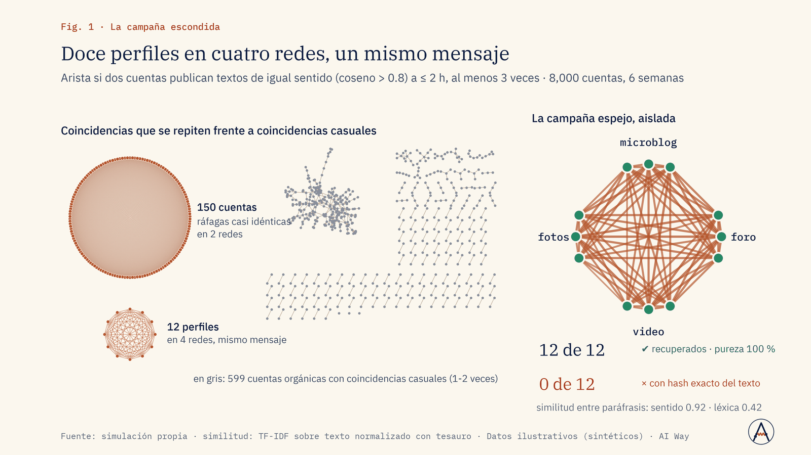
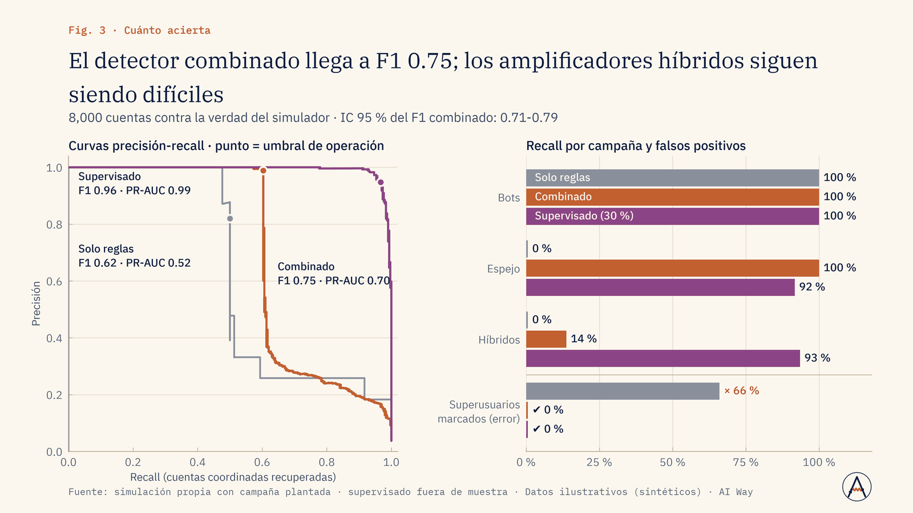

Riesgo y reputación
¿Cuánto de lo que se dice de nosotros es orgánico?
Detectamos cuentas coordinadas y publicaciones espejo; cada actor marcado pasa a revisión humana.
Responder a la crítica real y no a una campaña inflada.
Servicio · Nº 08
Cuando el problema no cabe en un producto estándar: autenticidad de la conversación, visión y video, opiniones por aspecto o simulación científica, validados como se valida un experimento y con los límites por escrito.
01 · El problema
Hay problemas de datos que no son «un tablero» ni «un chatbot»: saber si una conversación está inflada por cuentas coordinadas, leer cientos de anuncios en video de la competencia, extraer quién opina qué de qué aspecto o simular un sistema físico.
Hace falta alguien que formule el problema, elija el modelo y lo valide como se valida un experimento, y que diga con claridad qué no está probado.
02 · Enfoque
03 · Resultados de la demo
Dos módulos con verdad conocida. A · Autenticidad de la conversación: 8,000 cuentas y 60,279 publicaciones en 4 redes, con 300 cuentas coordinadas plantadas y 50 superusuarios humanos como trampa; el veredicto final es humano. B · Validar antes de mostrar: integradores propios contra la solución analítica de Kepler, con orden de convergencia, conservación de energía y repetibilidad medidos.
Muy activo no es lo mismo que coordinado
Fuente: simulación propia con campaña plantada · Datos ilustrativos (sintéticos) · AI Way
Euler se escapa; el integrador simpléctico se queda en la órbita
Fuente: simulación propia · integradores propios contra Kepler analítico · Datos ilustrativos (sintéticos) · AI Way



La misma disciplina de «validar antes de mostrar» sostiene a Asteria, el explorador astronómico de AI Way, y a una investigación propia con resultado negativo documentado. Las dos están en el laboratorio.
04 · Límites declarados
05 · Aplicaciones de negocio
Ejemplos de decisiones que este servicio ayuda a tomar; el alcance se define en el diagnóstico.
Riesgo y reputación
Detectamos cuentas coordinadas y publicaciones espejo; cada actor marcado pasa a revisión humana.
Responder a la crítica real y no a una campaña inflada.
Marketing
Objetos por cuadro, descripción de escenas y transcripción, resumidos por marca y campaña.
Ajustar el mensaje y el formato de la próxima campaña.
Ventas y producto
Extraemos quién opina qué de qué aspecto, con protocolo de anotación y diagnóstico del extractor.
Priorizar las mejoras del producto por aspecto.
Operación y seguridad
Visión local en CPU con lógica temporal y alertas con confirmación; el video no sale del lugar.
Decidir dónde instalar alertas y quién las atiende.
Talento y formación
Codificamos vacantes y temarios con un codebook y una matriz de brechas con confianza declarada.
Rediseñar el temario o el plan de contratación.
Dirección y estrategia
Probamos el método con datos sintéticos de verdad conocida, una línea base y límites por escrito.
Invertir, ajustar o detener el proyecto con un criterio acordado.
06 · Paquetes
Prueba de concepto: formulación, datos sintéticos con verdad conocida, línea base y un modelo, reporte de validación y límites.
Duración típica: 2 a 3 semanas
Modelo con datos del cliente, protocolo de anotación y gold, comparación de enfoques, app o API piloto.
Duración típica: 5 a 8 semanas
Sistema en producción (local o nube), monitoreo de desempeño, re-validación periódica y transferencia de conocimiento.
Duración típica: 10 a 16 semanas + soporte
Sin precios publicados: cada propuesta se cotiza tras un diagnóstico de alcance.
07 · Preguntas frecuentes
Proponemos una prueba de concepto corta con un criterio de éxito definido antes de empezar.
Se entrega el diagnóstico y la recomendación; un resultado negativo bien medido también ahorra dinero.
Se marcan cuentas para revisión humana; el detector no es una acusación.
Depende; muchas soluciones corren en CPU o en la nube por horas.
08 · Descarga
Presentación de la demo (PDF, 1.5 MB). El caso completo: problema, método, resultados contra criterio y límites declarados.
Descargar PDFSiguiente paso
En una llamada de 30 minutos revisamos si se puede, cómo lo mediríamos y qué no te podemos prometer.
Otros servicios